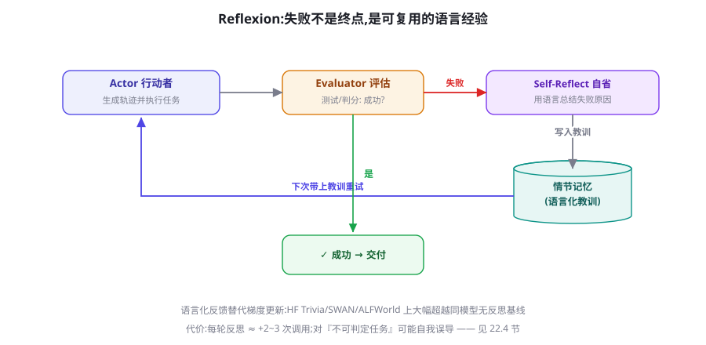

反思与自我改进：Reflexion、Self-Refine 与 Critic 模式
人类工程师的核心竞争力不是不犯错，而是从错误中学习的速度。本章讲把这个元能力装进 Agent 的三条路线：Reflexion 的失败记忆、Self-Refine 的生成-批判循环、以及工程上最常用的独立 Critic 模式——并认真讨论反思什么时候是净赚、什么时候是烧钱表演。
为什么需要外置反思：模型不会「自己长记性」
先破一个幻觉：让模型「反思一下你的答案」就能稳定提质——这句话只在部分场景成立。根本原因有二。其一，权重复位：对话结束，模型什么都没「学会」——下一次会话它还是同一个模型；单次会话内的「反思」只能影响当前生成，跨会话的改进必须外置存储（记忆，第 19 章）或训练（第 39 章）。其二，自我评估的锚定偏差：让同一个上下文里的模型评价自己刚产出的内容，它有系统性「认同自己」的倾向（自我偏好，self-preference bias）——它能看到笔误与逻辑断点，却很难否定自己的立场与方法论。这两条决定了反思机制的工程形态：反思必须是「外置的结构」——独立的评估环节、独立的存储、必要时独立的模型——而不能只是提示词里多一句话。
把「强化学习」的思路搬进语言空间：任务失败后，模型用语言总结失败原因存入情节记忆，下次尝试时带上教训。HumanEval 达到 91%（当时 Pass@1 的最高水位），ALFWorld/HotpotQA 全面超越无反思基线。它证明的核心命题：语言化反馈可以替代梯度更新，成为「从经验中改进」的低成本载体。
Reflexion：失败记忆的三件套架构
Reflexion 的架构由三个角色与一个存储组成：Actor（执行任务生成轨迹）、Evaluator（判定成败——测试、判分器或人类）、Self-Reflector（失败后用语言归因）+ 情节记忆（存教训，下次尝试注入 Actor）。与梯度式强化学习对比：「奖励信号」变成成败判定，「策略更新」变成教训文本，「记忆」变成外部存储——一次「语言空间里的策略梯度」。

import json, os
from openai import OpenAI
client = OpenAI()
LESSONS_PATH = "lessons.json" # 跨会话的情节记忆(19章)
def load_lessons(task_type: str) -> list:
if not os.path.exists(LESSONS_PATH):
return []
db = json.load(open(LESSONS_PATH, encoding="utf-8"))
return [l for l in db if l["type"] == task_type][-5:] # 最近5条
def reflect_and_save(task: str, trace: str, error: str, task_type: str):
"""失败后: 用语言归因并持久化教训"""
r = client.chat.completions.create(
model="gpt-4o-mini", temperature=0,
messages=[{"role": "user", "content":
f"任务: {task}\n执行轨迹:\n{trace[-3000:]}\n"
f"失败原因: {error}\n"
"用两句话总结可复用的教训(只写『下次应该怎么做』,"
"不要复述过程)"}]).choices[0].message.content
db = json.load(open(LESSONS_PATH, encoding="utf-8")) \
if os.path.exists(LESSONS_PATH) else []
db.append({"type": task_type, "lesson": r})
json.dump(db, open(LESSONS_PATH, "w", encoding="utf-8"),
ensure_ascii=False, indent=1)
return r
def solve_with_reflection(task: str, task_type: str, max_tries: int = 3):
lessons = load_lessons(task_type)
lesson_block = "\n".join(f"- {l}" for l in lessons) or "暂无"
for attempt in range(1, max_tries + 1):
trace, result, error = actor_run(
task, extra_context=f"过往教训:\n{lesson_block}")
if evaluator_pass(result):
return result
lesson = reflect_and_save(task, trace, error, task_type)
lesson_block += f"\n- {lesson}" # 会话内即时生效
raise RuntimeError("多次尝试未通过,教训已入库")实现要点：教训的格式约束——「只写下次应该怎么做」，禁止复述失败过程（过程已在轨迹里，教训的价值在抽象）；教训的数量控制——只注入最近 5 条，旧教训靠相关性检索（第 19 章情景记忆）而非全量；双层生效——会话内立即拼入上下文 + 跨会话持久化。做到这三点，你的 Agent 就拥有了「越用越懂你的坑」的能力。
Self-Refine：生成-反馈-修改的迭代循环
Self-Refine（Madaan et al. 2023, arXiv:2303.17651）与 Reflexion 的分工不同：它处理的是「没有明确失败信号」的质量改进——Reflexion 需要Evaluator 给出明确的成败（测试通过与否），而文案、方案、摘要这类任务只有「更好/更差」的灰度。Self-Refine 的循环是三步的精细化：生成 → 对同一输出做多维反馈（可执行性、完整性、风格……）→ 按反馈修改，循环至反馈收敛或达上限。论文在对话生成、代码优化、数学推理等任务上显示平均约 20% 的相对提升（具体幅度随任务浮动很大）。
其一：反馈必须「可执行」。「写得不够吸引人」是无效反馈（模型只能随机重写），「开头三句没有出现读者画像与核心承诺，补上」是有效反馈（可对照执行）。给反馈模型的提示词里必须要求：每条反馈附带「证据引用 + 修改建议」。其二：迭代会收敛到「反馈模型的能力上限」——同一个模型自己给自己提意见，两三轮后开始原地打转（每轮的「改进」其实是漂移）。工程对策：限制迭代 ≤3 轮、每轮要求「明确指出修改了什么」、连续两轮反馈相似度高于阈值即终止。Self-Refine 的收益曲线是陡峭的递减曲线——第一轮反馈吃掉大部分红利，之后的每一轮都在为边际收益支付全额成本。
独立 Critic 模式：工程上的主力形态
生产系统中最高频的反思形态，既不是 Reflexion 的完整三件套，也不是 Self-Refine 的自循环，而是「作者模型 + 独立 Critic 模型」的一次或多次对抗。它与 Self-Refine 的关键差别：Critic 是独立的调用实例（常换更便宜但更「狠」的配置），且以清单式评审而非开放评论——把第 57 章 LLM-as-Judge 的技术用于过程质量而非仅终点打分。一个生产级的 Critic 提示词骨架：
你是苛刻但公正的评审。逐项检查以下产出,每项给 PASS/FAIL:
1. [事实性] 每个论断是否都有来源支撑?列出无据论断。
2. [完整性] 任务要求的每个要素是否都在?列出缺失项。
3. [可执行] 指令/代码是否可以直接照做?列出模糊处。
4. [一致性] 与给定约束(风格/格式/长度)是否冲突?
输出格式:
{"verdict": "PASS|FAIL", "issues": [
{"item": 1, "quote": "原文引用", "problem": "问题",
"fix": "具体修改建议"}]}
禁止泛泛评论;每条 issue 必须可执行。清单式的三个好处：评审粒度可控（清单项可以按业务定制并版本化）；结果可统计（FAIL 项的分类统计就是你质量问题的排行榜）；可平行扩展（事实性检查、风格检查、合规检查拆给多个并行 Critic，各司其职——比一个「全知评审」更准）。Critic 的模型选择有一反直觉经验：小模型 + 窄清单经常优于大模型 + 宽清单——评审是「对照检查」任务，不需要创见，需要的是稳定与不留情面。
三条路线的对照与组合
| 维度 | Reflexion | Self-Refine | 独立 Critic |
|---|---|---|---|
| 触发条件 | 明确失败信号 | 质量灰度（无对错） | 可配置（每轮/关键点） |
| 反馈来源 | Evaluator（测试/判分） | 模型自评 | 独立评审模型 |
| 记忆机制 | 情节记忆（跨会话） | 会话内上下文 | 可配（结合教训库） |
| 主要成本 | 失败重跑全轨迹 | 多轮生成+反馈 | 每次评审一跳 |
| 典型收益场景 | 代码、可验证任务 | 文案、方案、摘要 | 一切生产级产出 |
| 主要风险 | 重跑成本失控 | 自评锚定、原地漂移 | 评审清单覆盖不全 |
组合的具体流水线：Critic 在事中拦截（每轮产出过清单，FAIL 打回重写）；Reflexion 在事后复盘（终态仍失败 → 归因入库）；教训库在长期沉淀（高频教训晋升为规则或评测用例）。三段各管一个时间尺度——单轮、单任务、跨会话——拼起来才是完整的「从错误中学习」。
Critic 的进阶玩法：多评审团与红蓝对抗
清单式 Critic 的两条进阶配置。多评审团（Panel）：不同维度的清单拆给多个并行 Critic（事实官、逻辑官、风格官、合规官），汇总各自的 FAIL 项统一打回——并行保延迟，分域保深度。汇总时注意「合并冲突」：两个评审团的意见可能互相矛盾（风格官要求精简、完整性官要求补充），最终裁决权应该回到「生成模型按优先级调和」或「人工规则」。优先级本身也是清单的一部分（合规 > 事实 > 完整 > 风格）。红蓝对抗（Adversarial Critic）：给 Critic 一个「攻击者人格」——「你的任务是找出这份产出会导致什么实际损失：谁会因此被误导？哪里会被断章取义？」——攻击视角的评审能挖出「核对型评审」看不到的问题，因为它换了「如果我是要钻空子的人」的立场。两条配置的适用信号：产出影响面大 → 多评审团；产出会被恶意解读或用于决策 → 红蓝对抗。它们的成本都是线性增加（多一路评审调用），在产出价值高的场景完全值得。
反思的经济学：什么时候是净赚
给一个可用于立项的决策框架。反思的收益期望 ≈ P(失败被拦截) × 拦截价值 − (反思成本 + 误报成本)。四条实证规律帮你填参数：① 任务有客观验证器时，反思最划算——代码（跑测试）、数据（可校验）、计算（可复算）：Evaluator 是确定性的，误报近零。② 失败成本高的动作前，反思必配——外部发送、资金操作、生产变更前的「最终自查」，无论多贵都值。③ 纯生成类任务，一轮 Critic 是甜点——两轮以上收益锐减（Self-Refine 的递减规律），除非每轮换检查维度。④ 反思对强模型的边际收益低于弱模型——旗舰模型自带的「内心反思」（第 43 章推理范式）已经覆盖大部分 Self-Refine 的收益，为它们外挂反思常常是重复支付；为小模型外挂结构化 Critic 则依然划算。一条元规则收束：反思机制的进化方向，是从「模型自觉」走向「结构保证」——最终形态往往不是更多反思轮次，而是更好的验证器（测试、Schema 检查、规则引擎），让「反思」变成「校验」。
诚实的边界：自我纠错研究的水分
一个必须直面的研究事实：2024 年的多篇独立研究（如 Huang et al. «Large Language Models Cannot Self-Correct Reasoning Yet», arXiv:2310.01798）对「纯自我纠错」给出了冷水——在没有外部反馈的情况下，让模型自我检查推理过程，在很多推理任务上不仅无益反而有害（模型会把本来对的改错，即「过度纠错」）。这批研究与本章的原则完全一致，并进一步指出边界：自我纠错的有效性高度依赖「可靠的反馈来源」——外部验证器（测试、工具、规则）、或经过训练的内化评估能力（推理模型的「检查」是 RL 训练出来的，不是提示词变出来的）。给你的工程启示有三：① 不要裸奔式自查——「再检查一遍」若无清单无工具，期待值要压到最低；② 区分「检查型任务」与「推理型任务」——前者（找 bug、核对清单）模型做得好，后者（重推结论）慎用自查；③ 推理模型的「思考」不能替代外置 Critic——内置思考优化的是单次生成质量，Critic 提供的是独立视角与业务清单，两者互补而非替代。这一节是本章的「防坑指南」：反思是好工具，但它是精密仪器，不是免费午餐。
案例：一个数据报告 Agent 的反思改造
用改造前后对比看本章机制的落地形态。某团队的数据报告 Agent（输入数据集 → 产出分析报告）上线后质量问题集中在三类：数字错误（模型心算聚合值）、结论跳跃（数据不支持结论强度）、口径混乱（同一指标多种算法）。改造方案按本章机制逐类落地：对数字错误——不靠反思靠结构：所有聚合计算强制走代码解释器（第 60 章沙箱），报告里的每个数字必须带「计算代码引用」——把「反思」升级为「校验」（本章元规则的实践）。对结论跳跃——上 Critic 清单：「每个结论标注支撑它的数据表引用；强度词（显著/大幅）必须有统计检验支撑」——独立小模型评审，FAIL 打回。对口徑混乱——Reflexion 式教训库：「营收口径必须先声明再使用」的高频教训晋升为系统提示词规则。三个月后的数字：报告返工率下降约七成，而单报告成本只上升约一成半（Critic 用小模型的功劳）。这个案例的模式值得记住：三类问题分别被「结构、评审、记忆」三种手段解决——反思机制的选型本质是为每类质量问题匹配最便宜的防线。
反思与 Agent Loop 的接线
把本章机制接回第 15 章的循环，四种典型挂载点各有含义。挂载点 A：工具结果后（步内反思）——观察异常（空结果、报错）时触发一步「这说明什么、下一步怎么办」，成本低、防跑偏，第 27 章的失败计数触发就属于这类。挂载点 B：里程碑后（段末反思）——完成计划的一组步骤后，对照目标做一次进度审计（「已完成的与计划一致吗？方向还对吗？」），第 18 章的重规划触发器可以接在这里。挂载点 C：终止前（出口反思）——最终答案生成后、交付前跑一次 Critic 清单——这是「交付质量闸门」，生产系统的标配。挂载点 D：任务失败后（离线反思）——Reflexion 全流程，教训入库供未来。四点的成本递增、频率递减——好的系统通常是 A 每步、B 每里程碑、C 一次、D 偶尔。把反思从「一种技术」理解为「挂载在循环上的一组质检点」，它的工程形态就清晰了。
站在认知科学的视角再回望一次本章：反思机制的设计空间，几乎一一对应人类学习科学的经典结论。Reflexion 的教训检索对应「从错误中学习需要提取练习」（第 2 章引用过的 retrieval practice）；Self-Refine 的可执行反馈对应「反馈必须具体且可操作」（Hattie & Timperley 的反馈模型：FeedUp-FeedBack-FeedForward）；独立 Critic 对应「同行评审优于自我评审」的共识；教训晋升规则对应「从案例学习到规则学习」的知识 crystallization。这个映射不是巧合——LLM 的「认知缺陷」（不复盘、自恋、健忘）与人类的认知偏差高度平行，因此人类组织的质量管理体系（评审制度、事后复盘 AAR、知识库沉淀）就是 Agent 质量体系的最佳设计蓝本。当你不知道怎么设计反思机制时，问一句「人类团队是怎么防止同类错误重犯的」，答案往往已经现成。
一个排序原则：先校验后反思
如果你的任务同时存在「可写校验器」与「反思」两个选项，永远先写校验器。校验器（测试、Schema 检查、规则引擎、类型系统）与反思的差异是本质性的：校验器是确定性的、零误报的、可版本化的、跨模型稳定的；反思是概率性的、有误报的、随模型漂移的。工程排序上，校验器承担「客观对错」，反思只负责「校验器覆盖不到的软质量」——风格、完整性、合理性。一个反例教训：某团队用「让模型检查 JSON 是否符合 Schema」替代了 schema 校验库——模型偶尔看漏一个类型错误，下游解析崩溃。这个错误荒谬到不该发生，却真实发生了，因为「用模型做一切」的惯性压过了「用什么工具干什么活」的常识。反思机制的铁律：它是校验体系的补充层，永远不是替代品。
失败记忆的组织：从教训到知识库
Reflexion 的教训库跑起来后会遇到两个成长问题：教训多了怎么检索（按任务类型？按失败模式聚类？）以及教训冲突怎么裁决（两条教训打架时听谁的）。工程上的成熟形态是把教训库升级为三层失败知识库：原始层——完整失败轨迹存档（审计与复盘用，不进上下文）；教训层——语言化教训（本章 Reflexion 的产物），按任务类型 + 失败模式打标签；规则层——被反复验证的高频教训「晋升」为系统提示词规则或 Hooks（第 30 章）——这是教训的「毕业」：从「每次靠检索注入的记忆」升格为「永久生效的行为准则」。晋升的判据建议量化：同一类教训出现 ≥5 次且对应任务类型无新失败案例，即可提名晋升，由人审核入规则。这套三层结构同时解决了检索压力（规则层不再需要检索）与置信问题（进入规则层的内容经过了人间接验证）。
三个高频疑问
Q：Critic 发现问题的「打回」怎么做才不陷入死循环？三重保险：轮次上限（如最多两轮修改）；每轮打回必须携带「上轮已修复项」清单（ Critic 复查时只查新增与未修复项，防止反复横跳）；终止兜底（达到上限后降级交付：产出 + 「未通过项列表」透明地交给下游/用户，让不完美可见而非隐藏）。死循环的本质是「作者与评审没有共同的事实基线」——已修复项清单就是那个基线。
Q：反思的输出（教训、FAIL 项）要进用户可见的上下文吗？分产品形态：工具型产品（编码助手）——可见且有价值（用户获得「它检查过什么」的信任证据）；对话型产品——不可见，只吸收结论（用户不需要看到「评审官认为你语气生硬」的过程剧透）。中间形态是「可展开的质检报告」——默认折叠、愿意看的人点开。原则：反思过程是给系统与运营看的，反思结果才可能面向用户。
Q：小模型 Critic 会不会漏掉大问题？会——所以清单设计要「深水域用大模型」。把清单按风险分层：致命项（事实错误、合规违规）用强模型或规则引擎核查；形式项（格式、风格）用小模型。评审的成本曲线因此变成「按风险定价」而非「一刀切」——这与第 78 章的级联路由是同一个思想在质量域的应用。
给现有 Agent 加反思的最小路径：① 从你的失败案例里挑 3 类高频问题，各写成一条 Critic 清单项（半小时）；② 在最终回答前插入一次清单评审，FAIL 项拼进「请修复以下问题」的重写请求（半小时）；③ 修复失败的任务把归因写入 lessons.json，下次同任务注入（半小时）。三步做完，你的 Agent 就具备了「交付前自查 + 跨会话记性」——本章 60% 的价值，一天的工程量都不到。剩余 40%（多评审团、红蓝对抗、教训晋升）等失败数据积累起来再建不迟——反思系统本身也应该被「反馈驱动地」建设，这是一次自我指涉的提醒。
关于与训练篇的预告：本章的一切反思都是「推理时的外挂」——每一代模型都要重新挂一遍。第 4 部分将展示这些外挂如何被「内化」：Reflexion 的教训进入训练数据（AgentTuning 用反思轨迹做 SFT），Critic 的判定进入奖励模型（RLHF 的偏好信号），验证器进入 RLVR 的奖励函数（第 43 章）。到那时你会发现，本章的语言化反思与第 4 部分的梯度式训练，是同一个学习闭环在「推理时」与「训练时」的两次投影——理解了这一层，你就打通了本书两大篇章之间的深隧道。
带着「先校验后反思」的排序原则与三层失败知识库，你已经拥有了一个会从错误中学习的系统。但这一切都发生在一个有限的资源容器里——上下文窗口。下一章讨论本书机制篇的收官话题：如何在有限窗口里，让每一行上下文都发挥最大价值。
再补一条与第 19 章的接线的细节：教训库与长期记忆的关系。教训库本质上是一种「专项化的语义记忆」——存的是「行为准则」而非「用户事实」，因此它应该与用户记忆分开管理（独立的命名空间、独立的检索键、不同的生命周期——用户记忆随用户存在，教训库随系统存在）。混用的后果是灾难性的：用户 A 的教训可能不适合用户 B 的场景，而教训一旦被当作「用户偏好」注入，Agent 会理直气壮地把上一次的失败经验用在完全不相关的新任务上。
一句话收束本章：反思机制的全部价值，在于把「错误」从一次性的损失，转化为「可复用的资产」。三次设计决策（外置的评估、可执行的反馈、分层的沉淀）决定这个转化的效率；一条排序原则（先校验后反思）守住它的成本底线。做到这两点，你的 Agent 就拥有了工程世界里最珍贵的品质——同样的坑，绝不踩第二次。
关于 Reflector 模型的选择还有一条实战细节：归因（Self-Reflect）任务对「批判性」要求高而对「创造力」要求低，因此它反而是少数推荐「把温度设为 0 的创意型任务」——你要的是冷静的分析而非丰富的想象。同时，归因提示词里给 2~3 个「失败模式分类」的锚点选项（工具选择错/信息不足/步骤遗漏/理解偏差）能显著提升归因的稳定性——带分类锚的归因输出可直接进统计，自由文本归因则要人工阅读。
第 16 章列过 ReAct 的五大失败模式（幻觉观察、原地打转、格式漂移、过度思考、观察过载）。本章机制恰好为每一种提供了对策挂点：原地打转 → 步内反思 + 失败计数；幻觉观察 → 出口 Critic 核对观察引用；过度思考 → 里程碑反思重对目标；观察过载 → 反思输出本身也要摘要化。翻回去对照一遍，你会发现「反思」并非独立功能，而是循环故障的免疫系统——它的清单项，就应该从你自己的失败模式统计里长出来。
本章小结
- 反思必须是外置结构：权重复位 + 自我锚定偏差决定了「多一句提示词」不是反思。
- Reflexion = Actor + Evaluator + Self-Reflect + 情节记忆；教训格式约束「只写怎么做」。
- Self-Refine 适合无客观验证器的质量改进；反馈必须可执行，迭代 ≤3 轮防漂移。
- 独立 Critic + 清单式评审是生产主力形态；小模型窄清单常胜大模型宽清单。
- 经济学四规律：有验证器最划算、高危动作必配、纯生成一轮甜点、强模型边际递减。
- 失败知识三层：原始层存档、教训层检索注入、规则层晋升为永久准则。
- 四挂载点：步内（防跑偏）、里程碑（对目标）、出口（质量闸门）、离线（教训入库）——成本递增频率递减。
自测题
- 「让模型在同一个对话里再检查一遍自己的答案」为什么不算本章定义的反思？缺了哪两个外置结构？
- 为你的业务写一份 Critic 清单（4~6 项），标注每项该由什么模型档位检查。
- 用四规律评估你手头的一个任务：该不该上反思？上哪一种？预测成本增幅。
- 教训库的「晋升」机制为什么需要人审核？全自动晋升会出什么问题？
参考文献与延伸阅读
- Shinn, N. et al. (2023). Reflexion: Language Agents with Verbal Reinforcement Learning. NeurIPS 2023. arXiv:2303.11366
- Madaan, A. et al. (2023). Self-Refine: Iterative Refinement with Self-Feedback. NeurIPS 2023. arXiv:2303.17651
- Madaan, A. et al. (2023). LLM-Instruct / Self-Evaluate: 自我评估相关系列.（同作者组的评估方法延伸）
- Zheng, C. et al. (2023). Judging LLM-as-a-Judge with MT-Bench and Chatbot Arena. NeurIPS 2023. arXiv:2306.05685（自我偏好偏差的实证来源，详见第 57 章）